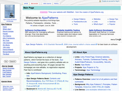

Places
Blog: Software As She's Developed
My main blog and - in the past - podcast, covering software development with a focus on the web. Since 2004.
Miniblog: Software Companion Blog
My posterous-powered miniblog covering similar topics to Software As She's Developed, but more off-the-cuff and low-level. Since 2009.
Microblog: Twitter
Tweeting about what i'm working on, events i'm attending, and trends i'm seeing. Since 2007.
Open source: GitHub Projects
My home on GitHub, with a few open-source projects
Blog (Contributor): Ajaxian
Blogging on the most popular Ajax and Javascript blog since 2005.
Bookmarks: Delicious
Capturing sites of interest since 2004.
Open source: TiddlyWiki Trac
Repository containing most of my contributions to TiddlyWiki and the "TiddlyVerse".
Google Groups
I particpate mostly in TiddlyWiki and Javascript groups.
Wikipedia
I make the odd contribution to the biggest encyclopedia in the known multiverse.
Open source: Ajax Demos
As a companion to my work on Ajax Design Patterns, I produced a pool of simple open-source Ajax demos at Ajaxify.com.
Network: Linked In
Member of LinkedIn.
Lanyrd
Events I'm planning to show my face at, or have already.
Personal Projects - Retired!
-
IE 6 Is Older Than Your Grandpa

- WebWait

- Web-O-Random

- Twelebs
- List Of Tweets

- Ajax Patterns 
Featured Writings
Cross-Domain Communication with IFrames
Often cited as a reference on cross-domain IFrame issues.
OAuth-OpenID: You're Barking Up the Wrong Tree if you Think They're the Same Thing
Often cited as a reference for similarities and differences between OAuth and OpenID.
AJAX Patterns: Design Patterns for AJAX Usability
My first attempt to classify design patterns of Ajax systems, which led to the the Ajax Patterns wiki.
Taking Browser Tabs Seriously
A wishlist for browser tabs suggested as a resource in the 2009 Mozilla Labs Design Challenge on Reinventing Tabs.
Dynamic Favicons
First demonstration of the dynamic favicon technique.
PhD Thesis: Design Reuse in Human-Computer Interaction and Software Engineering
My PhD asked how we can use design patterns, wikis, and other techniques for knowledge reuse to improve the user experience.